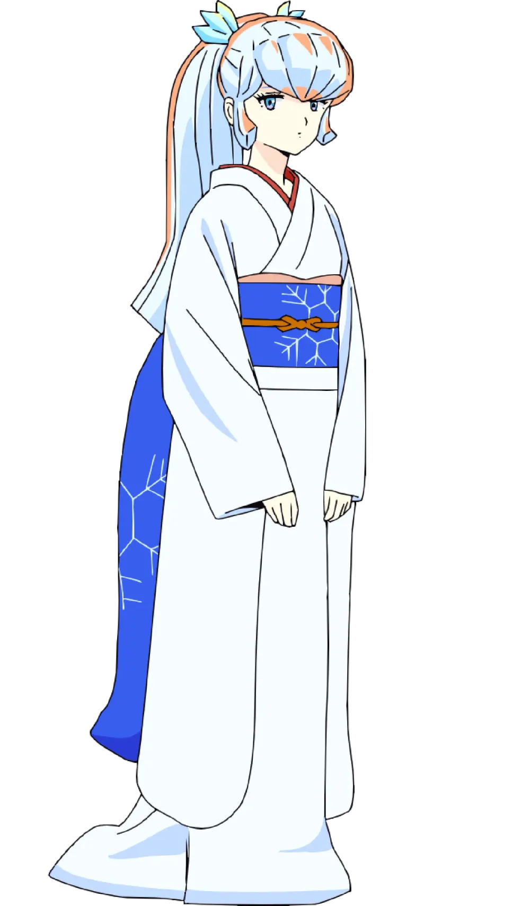
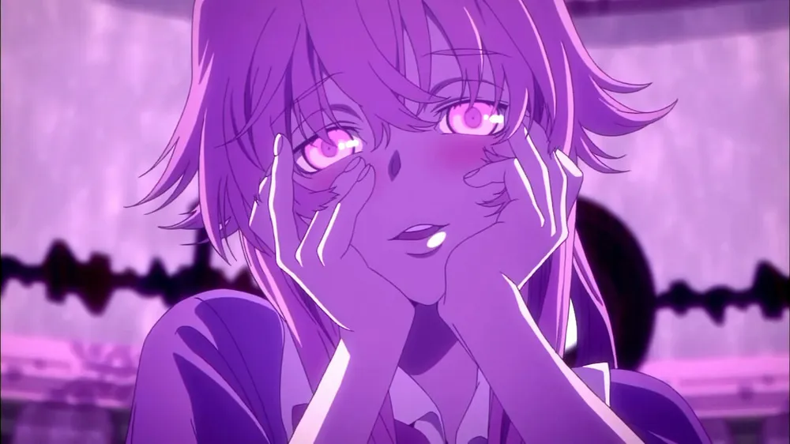
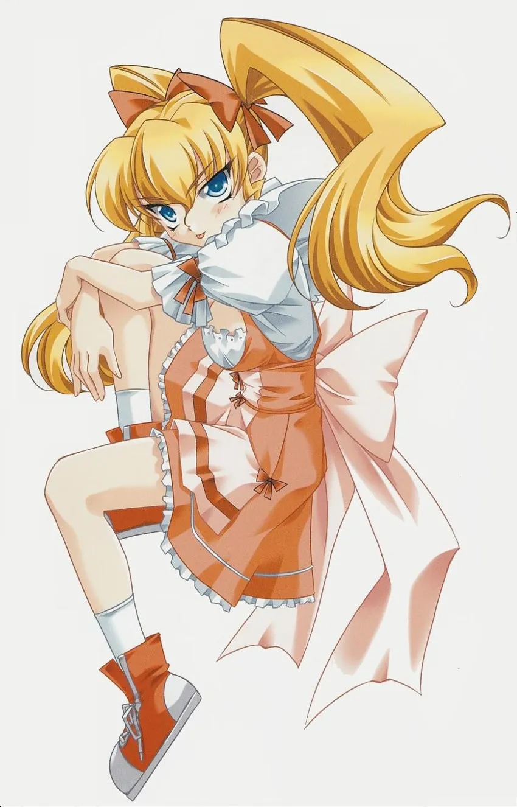

쿨데레

시끌별 녀셕들 - 오유키
차가운 인상 + 과묵한 미녀의 시초격 캐릭터로 이후 그녀를 오마주한 수많은 캐릭터 중 신세계 에반게리온의 메인 히로인이자 90년대 오타쿠들의 아이돌인 아야나미 레이의 등장으로 재평가 받은 캐릭터
얀데레

미래일기 - 가사이 유노
이전 애니 School days의 캐릭터도 있긴 했지만 얀데레라는 어원을 대중들이 인식하게 만든 황홀의 얀데레 표정으로 유명한 가사이 유노를 기원으로 치는 경우가 많음
츤데레

그대가 바라는 영원 - 다이쿠지 아유
작중 특징인 금발 트윈테일, 부잣집 딸, 주인공을 짝사랑 하면서도 늘 틱틱대고 자주 싸우지만 주인공이 잘해주면 얼굴이 붉어지고 솔직하지 못한 모습 등등 전형적인 츤데레의 아이콘이라 할 수 있음
그대가 바라는 영원 진짜 오랜만에 듣는 작품명이네